임상심리사-2급 (2015-03-08 기출문제)
1과목: 심리학개론
1. “통계적으로 유의미하다” 라는 말의 뜻으로 가장 적합한 것은?
- 실험 결과가 우연이 아닌 실험 처치에 의해서 나왔다.
- 실험 결과를 통계적 방법을 통해 분석할 수 있다.
- 실험 결과가 통계적 분석 방법을 써서 나온 것이다.
- 실험 결과가 통계적 혹은 확률적 현상이다.
(정답률: 74%)

2. 인간의 성행동을 연구한 Kinsey 등이 남성의 성행동과 여성의 성행동을 연구한 주된 방법은?
- 실험법
- 검사법
- 조사법
- 관찰법
(정답률: 73%)
3. Adler가 인간의 성격을 설명하면서 강조한 것이 아닌 것은?
- 열등감의 보상
- 우월성 추구
- 힘에 대한 의지
- 신경증 욕구
(정답률: 82%)
4. 성격에 관한 이론에서 특성이론에 대한 설명과 가장 거리가 먼 것은?
- 성격을 설명하는 것보다 기술하는 것에 주안점을 둔다.
- Allport는 성격을 기본특질, 중심특질, 이차적 특질 등으로 구분했다.
- Eysenck는 성격을 내향적-외향적 경향성, 신경증적 경향성, 정신병적 경향성 등으로 분류하였다..
- 특성이론에 의한 평가기법들은 주로 성격의 역동을 밝히는데 초점을 맞춘다.
(정답률: 57%)
5. Rogers의 성격이론에서 심리적 적응에 가장 중요한 역할을 한다고 가정하는 것은?
- 자아강도(ego strength)
- 자기(self)
- 자아이상(ego ideal)
- 인식(awareness)
(정답률: 90%)
6. 고전적 조건화 원리를 적용하여 가장 잘 설명할 수 있는 것은?
- 체계적 둔감화
- 미신적 행동
- 조형
- 토큰 이코노믹
(정답률: 79%)
7. Maslow와 그의 욕구위계이론에 관한 설명으로 틀린 것은?
- 배고픔, 목마름 등과 같은 결핍욕구를 중시한다.
- 존중의 욕구가 소속감과 사랑의 욕구보다 더 상위의 욕구이다.
- Maslow는 인본주의 심리학자로 “제3세력”을 대표하는 학자이다.
- 자아실현자들은 다른 사람들보다 절정경험을 더 자주할 수 있다.
(정답률: 61%)
8. 주변에 교통사고를 당한 사람들이 많은 사람은 교통사고 발생률을 실제보다 높게 판단하는 것처럼 특정 사건을 지지하는 사례들이 기억에 저장되어 있는 정도에 따라 사건의 발생가능성을 판단하는 경향은?
- 초두 효과
- 점화 효과
- 가용성 발견법
- 대표성 발견법
(정답률: 80%)
9. 어떤 조건자극이 일단 조건 형성되고 나면, 이 자극과 유사한 다른 자극들도 무조건 자극과 연합된 적이 없음에도 불구하고 조건반응을 야기하는 것은?
- 소거
- 자발적 회복
- 변별
- 자극일반화
(정답률: 89%)
10. Freud가 설명한 인간의 3가지 성격 요소 중 현실 원리를 따르는 것은?
- 원초아
- 자아
- 초자아
- 무의식
(정답률: 89%)
11. 일반적으로 사용되는 분포의 집중경향치로 옳게 짝지어진 것은?
- 평균값-중앙값
- 평균값-백분위
- 백분위-상관계수
- 중앙값-상관계수
(정답률: 75%)
12. 기억정보의 처리과정으로 옳은 것은?
- 부호화 → 저장 → 인출
- 저장 → 인출 → 부호화
- 저장 → 부호화 → 인출
- 부호화 → 인출 → 저장
(정답률: 75%)
13. Erikson의 인간 발달 단계에서 노년기에 나타나는 심리ㆍ사회적 위기는?
- 정체감 대 역할 혼미
- 통합감 대 절망감
- 신뢰감 대 자율감
- 생산성 대 침체감
(정답률: 86%)
14. 노년기의 일반적인 성격변화에 대한 설명으로 가장 거리가 먼 것은?
- 사고의 융통성과 개방성이 증가한다.
- 변화에 대한 두려움이 커진다.
- 내향성과 수동성이 증가한다.
- 통제력에 대한 자신감이 감소한다.
(정답률: 80%)
15. Festinger의 인지 부조화(Cognitive dissonance) 이론을 가장 잘 설명한 것은?
- 사람들은 자신의 지식과 감정 그리고 행동의 모든 측면이 일치하지 않으면 불쾌감을 경험한다.
- 사람들의 의견과 태도는 항상 행동과 일치하지 않는다.
- 사람들은 집단 속에서 집단의 뜻에 동조할 때 인지부조화가 일어난다.
- 인지부조화는 타인과의 관계가 원만하지 못할 때 발생한다.
(정답률: 74%)
16. 조건형성과 관련된 내용으로 잘못 짝지어진 것은?
- 조작적 조건형성의 응용 - 행동수정
- 소거에 대한 저항 - 부분강화 효과
- 강화보다 처벌 강조 - 행동조성
- 고전적 조건형성의 응용 - 유명연예인 광고모델
(정답률: 63%)
17. 기온에 따라 학습 능률이 어떻게 달라지는가를 알아보기 위해 기온을 13도, 18도, 23도인 세 조건으로 만들고 학습능률은 단어의 기억력 점수로 측정하였다. 이 때 독립변수는 무엇인가?
- 기온
- 기억력 점수
- 학습 능률
- 예언
(정답률: 88%)
18. A씨는 똑똑한 사람은 대개 성격이 차갑다고 생각한다. 이를 설명하는데 가장 적합한 것은?
- 대인지각의 가산성 효과
- 후광효과
- 지각 항상성
- 암묵적 성격이론
(정답률: 72%)
19. 척도와 그 예가 잘못 짝지어진 것은?
- 명명척도 : 운동선수 등번호
- 서열척도 : 성적에서의 학급석차
- 등간척도 : 온도계로 측정한 온도
- 비율척도 : 지능검사로 측정한 지능지수
(정답률: 68%)
20. 감각기억에 대한 설명과 가장 거리가 먼 것은?
- 지속시간이 1~2초 정도로 매우 짧다
- 실제 인출될 수 있는 용도보다 훨씬 큰 기억용량을 가지고 있다.
- 전체보고법 방식이 부분보고법 방식보다 영상기억의 용량이 더 크다
- 잔향기억이 영상기억보다 지속시간이 더 길다.
(정답률: 61%)
2과목: 이상심리학
21. 각 성격장애의 일반적인 증상에 대한 설명으로 옳은 것은?
- 강박성 성격장애 - 다른 사람에 의해 부당하게 취급되거나 이용될 것이라는 생각 때문에 타인에 대한 의심과 불신감을 특징적으로 나타낸다.
- 분열성 성격장애 - 타인에 대한 관심과 흥미가 부족하여 타인과 지속적인 사교적 관계를 맺지 못한다.
- 자기애성 성격장애 - 이성에 대한 관심과 욕구가 지나치게 강하고, 외모와 신체적 매력을 통해 관심을 끌려는 행동이 지배적이다.
- 의존적 성격장애 - 타인으로부터 호감을 받기를 갈망하지만 비난 또는 거절을 받을지도 모른다는 두려움 때문에 지속적으로 대인관계를 기피하게 된다.
(정답률: 65%)
22. DSM-5에서 주요 신경인지장애의 하위 유형(etiological subtype)에 해당하지 않는 것은?
- 알츠하이머병 형
- 피크병 형
- 루이체병 형
- 파킨슨병 형
(정답률: 65%)
23. 공항장애를 진단하는데 필요한 증상으로 가장 부적절한 것은?
- 토할 것 같은 느낌
- 감각이상증(마비감이나 찌릿찌릿한 감각)
- 흉부통증
- 메마른 감정표현
(정답률: 84%)
24. 정신장애와 관련되어 있는 주요 신경전달물질들 중 정신적 각성, 주의집중, 쾌 감각, 수의적 운동과 같은 심리적 기능에 영향을 미치며, 특히 정신분열증과 관련된 것으로 알려진 신경전달물질은?
- 도파민
- 세로토닌
- 노아에피네프린
- 글루타메이트
(정답률: 76%)
25. DSM-5에서 해리성 정체감 장애에 대한 설명과 가장 거리가 먼 것은?
- 기억에 있어서 빈번한 공백을 경험한다.
- DSM-5에서는 빙의 경험을 해리성 정체감 장애의 증상과 기본적으로 동일하다고 여기고 있다.
- 한 사람 안에 둘 이상의 각기 다른 정체감을 지닌 인격이 존재하는 경우를 말한다.
- 최면에 잘 걸리지 않는 성격을 보인다.
(정답률: 80%)
26. 반사회성 성격장애의 일반적인 특징과 가장 거리가 먼 것은?
- 높은 충동성
- 지속적인 무책임성
- 과도한 불안
- 호전성과 공격성
(정답률: 82%)
27. 정신분열증의 원인에 대한 설명과 가장 거리가 먼 것은?
- 정신분열증은 유전적 요인에 강력한 영향을 미치는 것으로 알려져 있다.
- 정신분열증 치료제인 클로제핀(clozapine)을 제외한 대부분의 약물은 세로토닌 억제제로서 여러 부작용을 나타낸다.
- 취약성-스트레스 모델에 따르면 정신분열증은 장애 자체가 만성화되는 것이 아니라 장애에 대한 취약성이 지속되는 것이다.
- 인지적 입장에서는 정신분열증 환자들이 나타내는 주의장애에 초점을 두고 있다.
(정답률: 60%)
28. DSM-5의 경계선 성격장애에 대한 설명과 가장 거리가 먼 것은?
- 정서, 대인관계 등이 불안정하고 예측하기 어렵다.
- 손상받기 쉬운 자기개념을 갖고 있다.
- 사회적 상황에서 비난당하거나 거부당하는 것에 사로잡혀 있다.
- 충동성과 자기 파괴적인 행동을 보인다.
(정답률: 58%)
29. DSM-5의 반응성 애착장애의 병인과 가장거리가 먼 것은?
- 안락함, 자극, 애정 등 소아의 기본적인 감정적 요구를 지속적으로 방치
- 소아의 기본적인 신체적인 욕구를 지속적으로 방치
- 돌보는 사람이 반복적으로 바뀜으로써 안정된 애착을 저해
- 유전적 원인으로 발생되며 주로 지능장애를 유발하는 대표적인 장애
(정답률: 87%)
30. 분리불안장애의 주요 증상에 해당하지 않는 것은?
- 주요 애착대상이나 집을 떠나야 할 때마다 심한 불안과 고통을 느낀다.
- 낯선 이와 같은 공간에 있지 못하고 과도한 불안을 나타낸다.
- 애착 대상과 분리될 수 있는 사건들에 대해 지속적이고 과도하게 걱정한다.
- 집을 떠나 잠을 자거나 주요 애착 대상이 근처에 없이 잠을 자는 것을 지속적으로 꺼리거나 거부한다.
(정답률: 76%)
31. 염색체 이상에 의해 유발되는 대표적인 지적 장애에 해당하지 않는 것은?
- Down's syndrome
- Fragile X syndrome
- Klinefelter syndrome
- Korsakoff's syndrome
(정답률: 68%)
32. DSM-5 성불편증에 대한 설명으로 가장 거리가 먼 것은?
- 성인의 경우 반대 성을 지닌 사람으로 행동하며 사회에서는 그렇게 받아들여지기를 강렬하게 소망한다.
- 자신의 생물학적 성과 성역할에 대해 지속적으로 불편감을 느낀다.
- 아동에서부터 성인에 이르기까지 다양한 연령대에서 나타날 수 있다.
- 동성애자들이 주로 보이는 장애이다.
(정답률: 81%)
33. DSM-5에서 지속성 우울장애의 증상에 해당하지 않은 것은?
- 1년 이상 지속된 우울장애
- 집중력의 감소나 결정의 곤란
- 활력의 저하나 피로감
- 자존감의 저하
(정답률: 64%)
34. 정신분열증의 특징적인 증상이 아닌 것은?
- 환각
- 불면
- 빈번한 주제이탈
- 정서적 둔마
(정답률: 77%)
35. 순종적이던 개가 실험과정에서 안절부절 못하고 공격적이며 대소변을 가리지 못하는 등의 실험신경증(experimental neurosis)은 다음 중 어떤 요인에 어려움이 있을 때 유발되는 것인가?
- 자극 일반화
- 소거
- 강화
- 자극 변별
(정답률: 66%)
36. 심리적 갈등이나 스트레스로 인해 갑작스런 시력상실이나 마비와 같은 감각 이상 또는 운동 증상을 나타내는 질환은?
- 공황장애
- 전환장애
- 신체증상장애
- 질병불안장애
(정답률: 73%)
37. 아동 및 청소년기 장애로서, 다른 사람의 기본 권리나 나이에 적합한 사회규준이나 규율을 위반하는 행동양상이 반복적이고 지속적으로 나타나는 것은?
- 품행장애
- 적대적 반항장애
- 간헐적 폭발성 장애
- 주의력결핍/과잉행동장애
(정답률: 77%)
38. Beck의 우울 이론 중 부정적 요소를 나타내는 3가지 도식에 해당하지 않는 것은?
- 과거에 대한 부정적인 도식
- 자신에 대한 부정적인 도식
- 미래에 대한 부정적인 도식
- 주변환경에 대한 부정적인 도식
(정답률: 74%)
39. DSM-5에서 알코올-관련 장애에 대한 설명으로 틀린 것은?
- 알코올 유도성 장애에는 알코올 중독, 알코올 오용, 그리고 다양한 알코올 유도성 정신장애들이 포함된다.
- 알코올 사용장애는 알코올 의존과 알코올 남용이 통합된 것이다.
- 알코올 유도성 성기능장애는 발기불능 등의 성기능에 어려움이 나타나는 장애이다.
- 지속적인 알코올 섭취로 치매증세가 나타나는 경우 알코올 유도성 치매에 해당한다.
(정답률: 49%)
40. DSM-5에서 제시된 조증 삽화의 주요 증상이 아닌 것은?
- 주의 산만
- 사고의 비약
- 목표가 불명확한 활동
- 수면에 대한 욕구 감소
(정답률: 62%)
3과목: 심리검사
41. BSID-Ⅱ(Bayley Scale of lnfant Development-Ⅱ)에 대한 설명으로 틀린 것은?
- 신뢰도와 타당도에 관한 보다 많은 정보를 제공하여 검사의 심리측정학적 질이 개선되었다.
- BSID-Ⅱ에서는 대상 연령범위가 16일에서 42개월까지로 확대되었다.
- 유아의 기억, 습관화, 시각선호도, 문제해결 등과 관련된 문항들이 추가되었다.
- 지능척도, 운동척도의 2가지 척도로 구성되어 있다.
(정답률: 69%)
42. Guilford의 지능구조 입체모형에서 조작(operation) 요인에 해당하는 것은?
- 의미 있는 단어나 개념의 의미적 정보
- 사고결과의 적절성을 판단하는 평가
- 어떤 정보에서 생기는 예상이나 기대들의 합
- 표정, 동작 등의 행동적 정보
(정답률: 57%)
43. 국어시험에서 독해력을 측정하려 했지만 실제로는 암기력을 측정했다면 무엇이 잘못되었다고 할 수 있는가?
- 신뢰도
- 타당도
- 객관도
- 실용도
(정답률: 79%)
44. Holland의 흥미 6각 모형에 관한 설명과 가장 거리가 먼 것은?
- 현실형(R) - 실행/사물 지향
- 탐구형( l ) - 사고/아이디어 지향
- 예술형(A) - 자선/사랑 지향
- 설득형(E) - 관리/과제 지향
(정답률: 75%)
45. MMPI와 같은 임상성격검사를 실시하고 해석할 때 고려할 사항으로 가장 거리가 먼 것은?
- 검사를 실시하기 전에 충분한 관계형성을 시도해야 한다.
- 보호자나 주변인물과의 면접을 통한 정보를 획득해야 한다.
- 실시한 검사를 채점한 후에 다시 수검자 면접을 실시해야 한다.
- 검사의 지시는 가능하면 간결할수록 좋다.
(정답률: 50%)
46. BGT(Bender-Gestalt Test)에 관한 설명으로 틀린 것은?
- 기질적 장애를 판별하려는 목적에서 만들어졌다.
- 언어적인 방어가 심한 환자에게 유용하다.
- 완충검사(Buffer test)로 사용될 수 없다.
- 정신지체나 성격적 문제도 진단하는데 유용하다.
(정답률: 63%)
47. MMPI 해석할 때 주의해야 할 점으로 가장 적합한 것은?
- 피검자의 독해력, 학력수준 혹은 지능수준을 사전에 알고 있어야 한다.
- 응답하지 않은 문항도 채점되므로, 사전에 “가급적 모든 문항에 다 응답하라”고 지시해서는 안 된다.
- 피검자 문항의 의미에 관해 주관적인 기준에 의해 판단하지 않도록 모호한 문항 내용에 대해서는 사전에 명확한 기준을 제시해 주어야 한다.
- MMPI는 성격특성을 평가하는 인성검사이므로 성별에 관한 정보는 그리 중요하지 않다.
(정답률: 78%)
48. Horn의 지능모델은 Wechsler 지능검사 소검사들을 4개 범주로 분류하였는데, 유동적 지능으로 분류되는 소검사가 아닌 것은?
- 토막짜기
- 어휘
- 숫자외우기
- 공통성문제
(정답률: 37%)
49. 아래 그림은 42세 된 환자의 RCFT(Rey Complex Figure Test) 결과이다. 이에 대한 설명으로 틀린 것은?
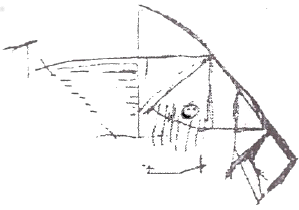
- 시각-공간이 단편화되어 있다.
- 왼쪽과 하단부의 무시현상(neglect)이 일어나고 있다.
- 우측 전두정골(frontoparietal)의 문제를 의심할 수 있다.
- 보속증 경향은 보이지 않는다.
(정답률: 68%)
50. 집중력과 정신적 추적능력(mental tracking)을 측정하는데 주로 사용되는 신경심리검사는?
- Bender Gestalt Test
- Rey Complex Figure Test
- Trail Making Test
- Wisconsin Card Sorting Test
(정답률: 64%)
51. 신경심리검사의 측정영역을 비교할 때 측정영역이 나머지와 다른 검사는?
- 지남력검사
- 숫자외우기 검사(digit span)
- 보스톤 이름대기검사(boston naming test)
- 요일순서 거꾸로 말하기
(정답률: 59%)
52. MMPI 방식에서 벗어나는 경향성을 측정하는 척도는?
- K척도
- L척도
- Es척도
- F척도
(정답률: 65%)
53. 지능 이론가와 그 주장이 잘못 짝지어진 것은?
- Spearman - 지능의 일반요인과 특수 요인
- Thurstone - 지능은 인지, 정서, 정의적 측면을 모두 포함하는 전체적인 능력
- Guilford - 지능 구조의 3차원 모델
- Cattell - 유동적 지능과 결정적 지능
(정답률: 60%)
54. K-WAIS에서 어휘검사의 측정내용으로 가장 적합한 것은?
- 학습 능력과 일반 개념의 정도
- 개인이 소유한 기본 지식의 정도
- 수 개념의 이해와 주의 집중력
- 사물의 본질과 비본질을 구분하는 능력
(정답률: 58%)
55. 로샤(Rorschach) 검사의 질문단계에서 검사자의 질문 또는 반응으로 가장 적절하지 않은 것은?
- 어느 쪽이 위인가요?
- 당신이 어디를 그렇게 보았는지를 잘 모르겠네요.
- 그냥 그렇게 보인다고 하셨는데 어떤 것을 말씀하시는 것인지 조금 더 구체적으로 설명해 주세요.
- 모양 외에 그것처럼 보신 이유가 더 있습니까?
(정답률: 63%)
56. 신경심리평가에 있어서 배터리검사의 장점은?
- 기본검사에서 기능이 온전하게 평가되면 불필요한 검사를 시행하지 않아도 된다.
- 필요한 검사에 대해서는 집중적으로 검사를 시행할 수 있다.
- 임상적 평가 목적과 연구 목적이 함께 충족될 수 있다.
- 타당도가 입증된 최신의 검사를 임상장면에 즉각 활용하기가 용이하다.
(정답률: 57%)
57. 다음 K-WAIS 검사 결과가 나타내는 정신장애로 가장 적합한 것은?
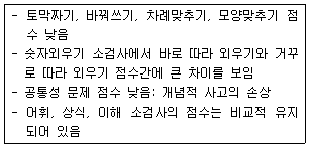
- 기질적 뇌손상
- 강박장애
- 불안장애
- 반사회성 성격장애
(정답률: 70%)
58. 검사의 종류와 검사구성방법을 짝지은 것으로 가장 적합하지 않은 것은?
- 16PF - 요인분석에 따른 검사구성
- CPI - 경험적 준거에 따른 검사구성
- MMPI - 경험적 준거방법
- MBTI - 합리적, 경험적 검사구성의 혼용
(정답률: 57%)
59. MMPI의 임상척도와 그 점수가 높을 때 고려되는 방어기제를 짝지은 것으로 틀린 것은?
- Hy - 부정, 억압
- Pa - 투사
- Ma - 부인, 억제
- Si - 회피, 철수
(정답률: 55%)
60. 심리평가를 위한 면담기법 중 비구조화된 면담 방식의 장점으로 옳은 것은?
- 면담자 간의 진단 신뢰도를 높일 수 있다.
- 연구 장면에서 활용하기가 용이하다.
- 중요한 정보를 깊이 있게 탐색할 수 있다.
- 점수화하기에 용이하다.
(정답률: 81%)
4과목: 임상심리학
61. 면접을 평가하기 위에 사용되는 타당도 유형에 관한 설명으로 가장 적합한 것은?
- 구성 타당도 - 면접 점수가 논리적으로 이론상으로 일치하는 행동이나 다른 평가 기준과 관계되어 있는 정도
- 예언 타당도 - 면접 항목이 변인이나 구성의 다양한 측면을 적절하게 측정하는 정도
- 내용 타당도 - 면접 점수가 관련 있으나 독립적인 다른 면접 점수나 혹은 행동과 상호 연관되어 있는 정도
- 공존 타당도 - 검사 점수가 미래의 어떤 시점에 관찰됐거나 획득한 점수나 행동을 예측하는 정도
(정답률: 68%)
62. 임상심리사가 학교 장면에서 수행하는 주된 역할로 가장 적합한 것은?
- 특수 학급의 수업
- 효율적인 교수 방법의 개발
- 정서장애 아동의 심리치료
- 보건 교육
(정답률: 75%)
63. 심리치료에서 치료자의 역전이(countertransference)에 대한 설명으로 가장 적합한 것은?
- 치료자는 내담자에 대해 부정적인 감정을 가져서는 안된다.
- 내담자에게 좋은 치료자라는 말을 듣고 싶은 것은 당연한 욕구이다.
- 내담자에게 느끼는 역전이 감정은 치료의 중요한 도구로 활용할 수 있다.
- 치료자가 역전이를 알기 위해 꼭 교육분석을 받아야 하는 것은 아니다.
(정답률: 81%)
64. 다음에서 설명하고 있는 치료법은?
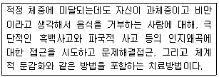
- 정신분석
- 인간중심치료
- DBT
- 인지행동치료
(정답률: 83%)
65. 행동관찰의 잠재적인 문제와 가장 거리가 먼 것은?
- 관찰자의 신뢰도
- 관찰자의 개입 가능성
- 치료와의 직접적인 연관성
- 상황적 요소
(정답률: 65%)
66. 다음은 어떤 조건형성에 해당하는가?
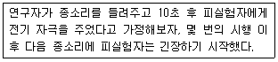
- 지연 조건형성
- 흔적 조건형성
- 동시 조건형성
- 후향 조건향상
(정답률: 53%)
67. 근육 긴장을 이완시키고, 심장의 박동을 조정하고, 혈압을 통제하는 훈련을 받는 것은?
- 바이오 피드백
- 행동적인 대처방식
- 문제 중심의 대처기술
- 정서 중심의 대처기술
(정답률: 82%)
68. 임상심리학의 역사에 관한 설명으로 가장 적합한 것은?
- 제1차 세계대전 이후에 급속한 성장이 이루어졌다.
- 인간의 적응영역에 대한 역할의 중요성은 감소하고 있다.
- 전문적이고 실용적인 관심과 연구지향적이고 과학적인 관심에 대한 갈등이 지속되고 있다.
- 기존의 전문가 집단과의 직업적인 경쟁이 없었다.
(정답률: 53%)
69. 합리적 정서행동치료의 비합리적 신념의 차원 중 인간문제의 근본요인에 해당하는 것은?
- 당위적 사고
- 과장
- 자기비하
- 인내심 부족
(정답률: 78%)
70. Wolpe의 체계적 둔감법을 적용하기에 가장 적합한 내담자는?
- 적절한 대처능력이 떨어지고 특정상황에 심각한 불안을 보이는 내담자
- 적절한 대처능력이 있으나 특정상황에 심각한 불안을 보이는 내담자
- 적절한 대처능력이 떨어지고 일반상황에 심각한 불안을 보이는 내담자
- 적절한 대처능력이 있으나 일반상황에 심각한 불안을 보이는 내담자
(정답률: 71%)
71. 정신건강 자문 중 점심시간이나 기타 휴식시간 동안에 임상사례에 대해 동료들에게 자문을 요청하는 형태는?
- 내담자-중심 사례 자문
- 피자문자-중심 사례 자문
- 비공식적인 동료집단 자문
- 피자문자-중심 행정 자문
(정답률: 76%)
72. MMPI 임상척도의 제작방식은?
- 내적 구조 접근 및 요인분석
- 내적 준거 방식
- 외적 준거 방식
- 직관적 방식
(정답률: 58%)
73. 임상심리사 윤리규정에서 비밀 유지를 파기하거나 비밀을 노출해도 되는 경우로 가장 적합한 것은?
- 기혼인 내담자의 외도 사실을 알았을 때
- 성인인 내담자가 초등학교 시절 물건을 훔친 사실을 알았을 때
- 말기암 환자인 내담자가 구체적인 자살계획을 보고할 때
- 우울장애를 지닌 내담자가 “지구상의 모든 인간이 다 죽었으면 좋겠다.” 고 보고할 때
(정답률: 81%)
74. 다음과 같은 면접의 유형은?
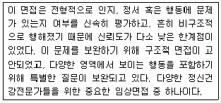
- 개인력면접
- 접수면접
- 진단적 면접
- 정신상태검사면접
(정답률: 55%)
75. 주로 흡연, 음주문제, 과식 등의 문제를 해결하기 위해 사용되어지며, 부적응적이고 지나친 탐닉이나 선호를 제거하는데 사용되는 행동치료 방법은?
- 체계적 둔감화
- 혐오치료
- 토큰경제
- 조성
(정답률: 80%)
76. 파킨슨병 및 헌팅턴병과 같은 운동장애의 발병과 관련이 가장 큰 것은?
- 변연계
- 기저핵
- 시상
- 시상하부
(정답률: 44%)
77. 취약성-스트레스 접근에 관한 설명과 가장 거리가 먼 것은?
- 스트레스와 생물학적 취약성이 질병 발생의 필요조건이다.
- 정신장애의 발병에 생물학적 취약성을 우선시하는 접근이다.
- 정신장애의 발병요인의 상호작용을 주장하는 접근이다.
- 생물학적 두 부모가 고혈압을 가진 경우 자녀의 고혈압 발병 가능성이 매우 높게 나타난다.
(정답률: 55%)
78. 행동평가에서 명세화해야 하는 것으로 가장 거리가 먼 것은?
- 행동결과
- 목표행동
- 성격특질
- 선행조건
(정답률: 60%)
79. 강제입원 아동 양육권 여성에 대한 폭력, 배심원 선정 등의 문제에 특히 관심을 가지는 심리학 영역은?
- 아동임상심리학
- 임상건강심리학
- 법정심리학
- 행동의학
(정답률: 77%)
80. K-WAIS-4의 4요인 구조에서 지각추론 요인에 해당하는 소검사가 아닌 것은?
- 토막짜기
- 동형찾기
- 행렬추론
- 퍼즐
(정답률: 63%)
5과목: 심리상담
81. 다음 중 옳은 설명으로만 짝지어진 것은?
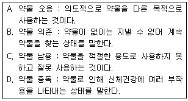
- A, B
- B, D
- C, D
- A, D
(정답률: 68%)
82. 정신분석적 상담기법이 아닌 것은?
- 공감적 경청
- 자유연상
- 꿈의 해석
- 전이의 해석
(정답률: 85%)
83. 진로교육을 실시하기 위한 일반적인 지도단계를 순서대로 바르게 나열한 것은?
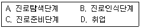
- A-B-C-D
- B-A-C-D
- B-C-A-D
- A-C-B-D
(정답률: 61%)
84. 가족 구성원을 상실한 가족에게 나타나는 비애반응의 단계를 바르게 나열한 것은?
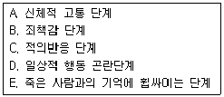
- A→E→B→C→D
- A→B→C→D→E
- E→A→C→B→D
- E→B→A→C→D
(정답률: 55%)
85. 다음 대화에서 상담자의 반응은?
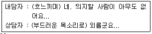
- 해석
- 재진술
- 요약
- 반영
(정답률: 70%)
86. 다음에서 설명하고 있는 치료 기법은?
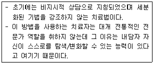
- 대상관계치료
- 정신역동적 치료
- 내담자 중심치료
- 게슈탈트 치료
(정답률: 81%)
87. Ellis의 합리적-정서행동 치료(REBT)에서 심리적 장애를 유발시키는 것으로 가정하는 주된 요인은?
- 비합리적 신념
- 왜곡된 자기개념
- 실재하는 선행사건
- 아동기의 외상적 경험
(정답률: 82%)
88. 정신분석에서 내담자가 지속적이고 반복적인 학습을 통해 자신이 이해하고 통찰한 바를 충분히 소화하는 과정은?
- 자기화
- 훈습
- 완전학습
- 통찰의 소화
(정답률: 73%)
89. 집단상담과 개인상담의 차이로 틀린 것은?
- 개인상담에 비해서 집단상담은 남을 대하는 바람직한 태도나 행동반응을 즉각적으로 시도해보고 확인할 수 있으며 남들과의 친밀감에 관한 경험을 가질 수 있다.
- 집단상담에서는 개인상담과는 달리 상담자뿐만이 아닌 다른 참여자들로부터도 도움을 받을 수 있다.
- 집단상담에서의 상담자의 역할은 다른 참여자들의 역할로 인해 줄어든다.
- 집단상담에서는 개인상담과는 달리 도움을 받기만 하는 입장이 아닌 다른 참여자들에게 도움을 주는 경험을 가질 수 있다.
(정답률: 86%)
90. 행동주의적 상담의 행동수정 기법에 해당하는 것은?
- 자유연상
- 자기주장훈련
- 반영적 경청
- 해석
(정답률: 82%)
91. 최근 실직한 남성 내담자가 재취업을 희망하는 직업 분야에서 요구하는 특정한 훈련이나 직무를 수행함에 있어 성공가능성을 예측하는데 가장 적합한 검사는?
- 직업적성검사
- 직업흥미검사
- 직업성숙도검사
- 직업가치관검사
(정답률: 75%)
92. 행동주의 상담의 한계에 관한 설명으로 틀린 것은?
- 상담과정에서 감정과 정서의 역할을 강조하지 않는다.
- 내담자의 문제에 대한 통찰이나 심오한 이해가 불가능하다.
- 고차원적 기능과 창조성, 자율성을 무시한다.
- 상담자와 내담자의 관계를 중시하여 기술을 지나치게 강조한다.
(정답률: 78%)
93. 집담상담을 준비할 때 상담자가 고려해야 할 사항과 가장 거리가 먼 것은?
- 상담의 목적에 따라 내담자의 성, 연령, 배경 등을 고려해야 한다.
- 집단의 크기는 일반적으로 15-20명 정도가 적합하다.
- 모임의 빈도는 일주일에 한 번 혹은 두 번 정도 만나는 것이 좋다.
- 집단상담을 하는 장소는 너무 크지 않고 외부로부터 방해받지 말아야 한다.
(정답률: 83%)
94. 성관련 상담에서 상담자의 태도로 가장 적합한 것은?
- 내담자가 성에 대한 기본지식을 갖고 있다고 전제한다.
- 성문제가 상담자의 영역을 넘어설 때 다른 성문제 전문가에게 의뢰한다.
- 내담자가 성문제를 왜곡하고 꺼려하는 느낌일 때는 적절히 회피한다.
- 상담자의 기본적인 성지식은 그다지 중요하지 않다.
(정답률: 66%)
95. Ellis의 ABCDE 모형에 관한 설명으로 옳은 것은?
- A - 문제 장면에 대한 내담자의 신념
- B - 선행사건
- C - 정서적ㆍ행동적 결과
- D - 새로운 감정과 행동
(정답률: 78%)
96. 내담자 중심 상담이론에서 상담관계 형성을 위해 제안한 3가지 주요한 원리가 아닌 것은?
- 무의식적 해석
- 무조건적인 긍정적 존중
- 공감적 이해
- 진실성
(정답률: 85%)
97. 다음에서 상담자가 소홀히 하고 있는 것은?
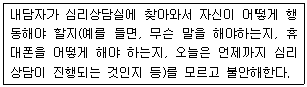
- 수용
- 해석
- 구조화
- 경청
(정답률: 87%)
98. 집단상담의 유형이 아닌 것은?
- 지도집단
- 치료집단
- 자조집단
- 전문집단
(정답률: 74%)
99. 상담에 대한 설명으로 가장 적합한 것은?
- 상담은 상담자가 해결방법을 제시하고 내담자가 이에 따르게 하는 것이다.
- 상담은 내담자의 내적 자원이 충분히 활용될 수 있도록 상담자가 안내하는 일이다.
- 상담은 문제를 분석하여 상담자가 정확한 처방을 내리는 일이다.
- 상담은 정보의 제공을 주로 하는 조력활동이다.
(정답률: 85%)
100. 청소년 상담에서 특히 고려해야 할 요인과 가장 거리가 먼 것은?
- 일반적인 청소년의 발달과정에 대한 규준적 정보
- 한 개인의 발달단계와 과업수행 정도
- 내담자 개인의 영역별 발달수준
- 내담자의 이전 상담경력과 관련된 사항
(정답률: 81%)
설명: "통계적으로 유의미하다"는 일반적으로 통계적 가설 검정에서 사용되며, 특정한 가설이 맞는지 아닌지를 검증하는 것입니다. 이때, 통계적으로 유의미하다는 것은 검정 결과가 우연히 발생할 확률이 매우 낮다는 것을 의미합니다. 따라서, 실험 결과가 통계적으로 유의미하다는 것은 실험 처리가 결과에 영향을 미쳤다는 것을 의미합니다.